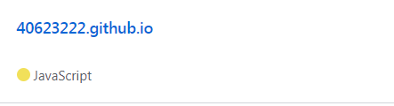

step1:建立一個新的倉庫,名字為自己的學號.github.io

step2:克隆新的倉庫的網址,資料夾名字取為40623224,按Enter
< https://github.com/mdecadp2018/site-40623222>
step3:除了.git和README.md不用複製,其餘都複製到自己的資料夾
step4:先看自己的狀態然後增加,再提交,推送的名稱為initial add
step5:設定自己提交的email和名字
step6:開啟進端https://localhost:8443進去修改40623222
step7:在重複step4的步驟,在git push上傳